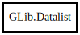

Datalist
Object Hierarchy:

Description:
[ CCode ( cname = "GData*" ) ]
public struct Datalist<G>
Content:
Creation methods:
Methods:
- public void @foreach (DataForeachFunc<G> func)
- public void clear ()
- public weak G get_data (string key)
- public G id_dup_data (Quark key_id, DuplicateFunc<G> dup_func)
- public weak G id_get_data (Quark key_id)
- public void id_remove_data (Quark key_id)
- public G id_remove_no_notify (Quark key_id)
- public bool id_replace_data (Quark key_id, G oldval, owned G newval, DestroyNotify? destroy, out DestroyNotify? old_destroy)
- public void id_set_data (Quark key_id, owned G data)
- public void id_set_data_full (Quark key_id, owned G data, DestroyNotify? destroy_func)
- public void remove_data (string key)
- public G remove_no_notify (string key)
- public void set_data (string key, owned G data)
- public void set_data_full (string key, owned G data, DestroyNotify? destry_func)